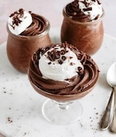

Here is the recipe for a chocolate mousse from Sally's Baking:
Ingridents:
1 and 3/4 cups (219g) all-purpose flour (spooned & leveled)
3/4 cup (62g) unsweetened natural cocoa powder
1 and 3/4 cups (350g) granulated sugar
2 teaspoons baking soda
1 teaspoon baking powder
1 teaspoon salt
2 teaspoons espresso powder (optional
1/2 cup (120ml) canola or vegetable oil
2 large eggs, at room temperature
3/4 cup (180g) full fat sour cream, at room temperature
1/2 cup (120ml) buttermilk, at room temperature
2 teaspoons pure vanilla extract
1/2 cup (120ml) hot water or coffee
optional: 1 cup (180g) mini or regular semi-sweet chocolate chips
optional garnish: fresh berries and/or chocolate shavings
Here is the recipe:
1. Preheat oven to 350°F (177°C). Grease four 8-inch or 9-inch cake pans, line with parchment paper rounds, then grease the parchment paper. Parchment paper helps the cakes seamlessly release from the pans. (If it’s helpful, see this parchment paper rounds for cakes video & post.)
2. Make the cake: Whisk the flour, cocoa powder, sugar, baking soda, baking powder, salt, and espresso powder (if using) together in a large bowl. Set aside. Using a handheld or stand mixer fitted with a whisk attachment (or you can use a whisk) mix the oil, eggs, and sour cream together on medium-high speed until combined. Add the buttermilk and vanilla and mix until combined. Pour the wet ingredients into the dry ingredients, add the hot water/coffee, and whisk or beat on low speed until the batter is completely combined. Fold in the chocolate chips, if using.
3. Divide batter evenly between 4 pans. Bake for 19–23 minutes. Baking times vary, so keep an eye on yours. The cakes are done when a toothpick inserted in the center comes out clean.
4. Remove the cakes from the oven and set on a wire rack. Allow to cool completely in the pan. The cakes may slightly sink in the middle as they cool—that’s expected.
5. As the cakes cool, prepare the chocolate mousse so it can chill and be ready at the same time as the cake layers. You can also prepare the mousse 1-2 days ahead of time. Whisk the hot water and cocoa powder together. Set aside. Melt the chopped chocolate bars in a double boiler or use the microwave. If using the microwave: place the chopped chocolate in a medium heat-proof bowl. Melt in 20 second increments in the microwave, stirring after each increment until completely melted and smooth. Pour hot water/cocoa mixture into melted chocolate and stir until thick and smooth. Set aside. Using a hand mixer or a stand mixer fitted with a whisk attachment, whip the heavy cream, confectioners’ sugar, and vanilla extract together on medium-high speed until medium peaks form, about 3-4 minutes. Medium peaks are between soft/loose peaks and stiff peaks. Pour in the chocolate mixture and using a spoon or rubber spatula, gently fold together. Avoid over-mixing which can deflate/thin out the mousse. Cover mousse and chill in the refrigerator for at least 2 hours and up to 2 days. Makes about 4.5 cups (about 910g) chocolate mousse.
6. Assemble layers before preparing chocolate ganache: First, level the cakes if needed: using a large serrated knife, slice a thin layer off the tops of the cakes to create a flat surface. Discard (or crumble over ice cream!). Place 1 cake layer on your cake stand, cake turntable, or serving plate. Using a large icing spatula, evenly cover the top with about 1.5 cups chocolate mousse. Top with 2nd layer and evenly cover the top with 1.5 cups chocolate mousse. Top with the third cake layer, then spread another 1.5 cups mousse evenly on top. Save a large spoonful of mousse for a thin crumb coat. Top with final 4th cake layer. Spread any remaining mousse around the sides as a crumb coat. Run a bench scraper around the cake to smooth out crumb coat. Refrigerate cake for at least 1 hour and up to 4 hours. Prepare the ganache as you wait.
7. Chocolate Ganache: Place chopped chocolate in a medium heat-proof bowl. Heat the cream in a small saucepan over medium heat until it begins to gently simmer. (Do not let it come to a rapid boil—that’s too hot!) Pour over chocolate, then let it sit for 2-3 minutes to gently soften the chocolate. With a metal spoon or small rubber spatula, very slowly stir until chocolate has melted and mixture is smooth. The finer you chopped the chocolate, the quicker it will melt with the cream. If it’s not melting, do not microwave it. If needed, see Troubleshooting Chocolate Ganache. Once ganache mixture is smooth, let it cool for 20 minutes at room temperature before spreading on chilled cake.
8. Pour/spoon ganache on chilled cake. Smooth the top with an icing spatula and the sides with a bench scraper. Top with optional garnish such as fresh berries and/or chocolate shavings. Serve cake immediately or chill, uncovered, for up to 4–6 hours before serving. Cake can be served at room temperature or chilled.
9. Cover leftover cake tightly and store in the refrigerator for up to 5 days.